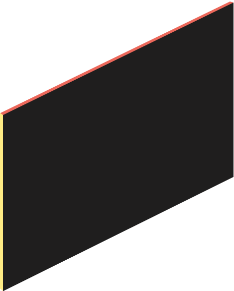

Make a Bold
Statement
Striking presentations that expand the perception of your viewers.

Design for
all devices
Slider Revolution 6.0 is a web-design and animation tool with a clear, visual interface.